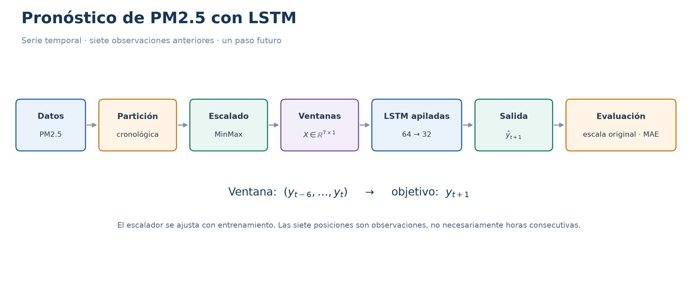
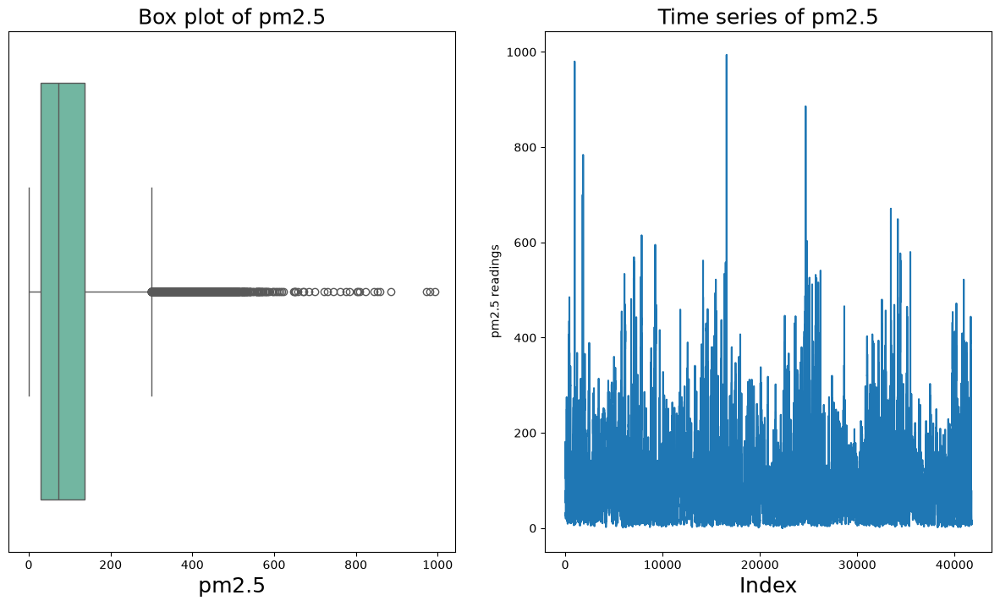
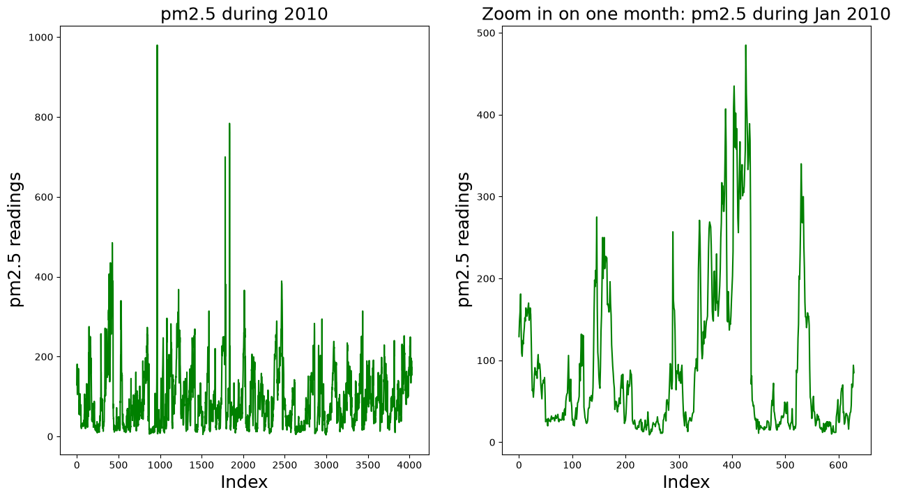
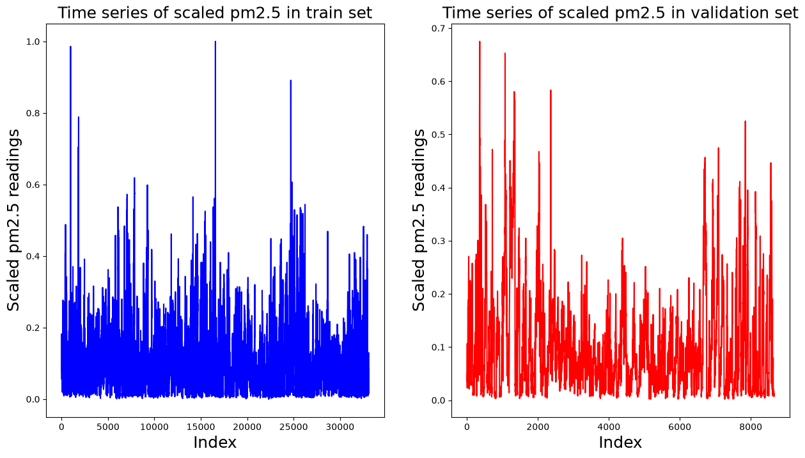
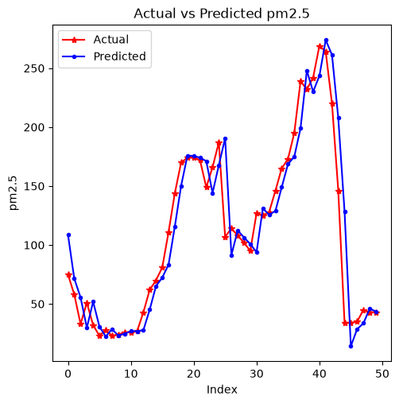

Aplicación de RNN y LSTM a series de tiempo#
En esta aplicación se utiliza una LSTM para pronosticar la concentración de
partículas PM2.5 a partir de observaciones anteriores. El ejemplo procede del
archivo ann_model.ipynb y conserva sus celdas de código originales.
La LSTM es una arquitectura recurrente. El archivo de origen presenta aquí un
modelo de LSTM apiladas; no incluye en esta aplicación un modelo independiente
con SimpleRNN. La teoría general de RNN y LSTM se encuentra en el capítulo
correspondiente del libro.

Fig. 5 Flujo del ejemplo extraído: lectura, partición temporal, escalado, construcción de ventanas, LSTM, predicción y evaluación.#
Definiciones de series de tiempo#
Una serie de tiempo es una colección de observaciones ordenadas según el instante en que se registran. Puede representarse como:
donde \(y_t\) es el valor observado en el instante \(t\). En el ejemplo, la variable seleccionada es la concentración de PM2.5.
Frecuencia: intervalo previsto entre registros, como una hora o un día. Es importante verificar si existen observaciones faltantes o irregulares.
Tendencia: evolución general de la serie a lo largo del tiempo.
Estacionalidad: patrón que se repite aproximadamente con cierta frecuencia, como un comportamiento diario o anual.
Rezago (lag): valor observado en un instante anterior al de referencia.
Ventana temporal: conjunto de observaciones pasadas utilizado como entrada.
Horizonte de predicción: distancia temporal o número de pasos entre la última información disponible y el valor que se busca pronosticar.
Residuo o error de predicción: diferencia entre el valor observado y el pronosticado, por ejemplo \(e_t=y_t-\hat y_t\).
Formulación del ejemplo#
La función makeXy utiliza siete observaciones anteriores para predecir la
siguiente. De forma esquemática:
Tras el escalado, el arreglo de entrada de la LSTM tiene la forma \((\text{muestras},7,1)\): siete pasos y una característica por paso.
Important
El conjunto de datos tiene registros horarios, pero el código elimina filas con PM2.5 faltante. Por ello, siete observaciones consecutivas del arreglo no están garantizadas como siete horas consecutivas si existen huecos en las fechas. No se trata de una ventana de siete días.
Datos y alcance#
El ejemplo usa el conjunto de contaminación atmosférica de Pekín, disponible en el repositorio UCI. La celda original lo lee desde una copia en GitHub; su dirección se conserva sin cambios. La descarga requiere conexión a internet.
El código divide los registros cronológicamente: antes de 2014 se emplean para entrenamiento y los posteriores para validación. No se define un tercer conjunto de prueba independiente.
Note
Se conservan las salidas originales que estaban guardadas en el notebook. No se han recalculado en esta extracción y pueden depender de archivos y modelos previos.
Se conserva la aplicación LSTM del archivo de origen y se presentan las tareas del proyecto de series de tiempo orientadas a RNN o LSTM.
Aplicación: LSTM para la predicción de series de tiempo#
Continuaremos usando el conjunto de datos sobre contaminación del aire (
pm2.5) usando LSTM. La lectura y el preprocesamiento de los datos se presentan en las celdas siguientes. El conjunto de datos original se divide en dos conjuntos: entrenamiento y validación, que se usan para el entrenamiento y validación del modelo respectivamente.
La función
makeXyse utiliza para generar arreglos de regresores y objetivos:X_train, X_val, y_trainyy_val.X_train y X_val, generados por la funciónmakeXy, son arreglos 2D de forma (número de muestras, número de pasos de tiempo). Sin embargo, la entrada a las capas RNN debe ser de forma (número de muestras, número de pasos de tiempo, número de características por paso de tiempo).En este caso, estamos tratando solo con
pm2.5, por lo tanto, el número de características por paso de tiempo es uno. El número de pasos de tiempo es siete y el número de muestras es el mismo que el número de muestras enX_trainyX_val, que se transforman a arreglos 3D
import pandas as pd
from sklearn.preprocessing import MinMaxScaler
import datetime
import matplotlib.pyplot as plt
import seaborn as sns
import numpy as np
import warnings
warnings.filterwarnings('ignore')
plot_fontsize = 18;
df = pd.read_csv('https://raw.githubusercontent.com/lihkir/Data/refs/heads/main/PRSA_data_2010.1.1-2014.12.31.csv', usecols=lambda column: column not in ['DEWP', 'TEMP', 'cbwd', 'Iws', 'Is', 'Ir'])
print('Shape of the dataframe:', df.shape)
Shape of the dataframe: (43824, 7)
df.head()
| No | year | month | day | hour | pm2.5 | PRES | |
|---|---|---|---|---|---|---|---|
| 0 | 1 | 2010 | 1 | 1 | 0 | NaN | 1021.0 |
| 1 | 2 | 2010 | 1 | 1 | 1 | NaN | 1020.0 |
| 2 | 3 | 2010 | 1 | 1 | 2 | NaN | 1019.0 |
| 3 | 4 | 2010 | 1 | 1 | 3 | NaN | 1019.0 |
| 4 | 5 | 2010 | 1 | 1 | 4 | NaN | 1018.0 |
df.dropna(subset=['pm2.5'], axis=0, inplace=True)
df.reset_index(drop=True, inplace=True)
df['datetime'] = df[['year', 'month', 'day', 'hour']].apply(lambda row: datetime.datetime(year=row['year'], month=row['month'], day=row['day'],
hour=row['hour']), axis=1)
df.sort_values('datetime', ascending=True, inplace=True)
plt.figure(figsize=(15, 8))
plt.subplot(1, 2, 1)
g1 = sns.boxplot(df['pm2.5'], orient="h", palette="Set2")
g1.set_title('Box plot of pm2.5', fontsize=plot_fontsize);
g1.set_xlabel(xlabel='pm2.5', fontsize=plot_fontsize)
g1.set(yticklabels=[])
g1.tick_params(left=False);
plt.subplot(1, 2, 2)
g2 = sns.lineplot(df['pm2.5'])
g2.set_title('Time series of pm2.5', fontsize=plot_fontsize)
g2.set_xlabel('Index', fontsize=plot_fontsize)
g2.set_ylabel('pm2.5 readings');
plt.show()

plt.figure(figsize=(15, 8))
plt.subplot(1, 2, 1)
g1 = sns.lineplot(df['pm2.5'].loc[df['datetime']<=datetime.datetime(year=2010,month=6,day=30)], color='g')
g1.set_title('pm2.5 during 2010', fontsize=plot_fontsize)
g1.set_xlabel('Index', fontsize=plot_fontsize)
g1.set_ylabel('pm2.5 readings', fontsize=plot_fontsize);
plt.subplot(1, 2, 2)
g = sns.lineplot(df['pm2.5'].loc[df['datetime']<=datetime.datetime(year=2010,month=1,day=31)], color='g')
g.set_title('Zoom in on one month: pm2.5 during Jan 2010', fontsize=plot_fontsize)
g.set_xlabel('Index', fontsize=plot_fontsize)
g.set_ylabel('pm2.5 readings', fontsize=plot_fontsize);
plt.show()

split_date = datetime.datetime(year=2014, month=1, day=1, hour=0)
df_train = df.loc[df['datetime']<split_date]
df_val = df.loc[df['datetime']>=split_date]
print('Shape of train:', df_train.shape)
print('Shape of test:', df_val.shape)
Shape of train: (33096, 8)
Shape of test: (8661, 8)
df_train.head()
| No | year | month | day | hour | pm2.5 | PRES | datetime | |
|---|---|---|---|---|---|---|---|---|
| 0 | 25 | 2010 | 1 | 2 | 0 | 129.0 | 1020.0 | 2010-01-02 00:00:00 |
| 1 | 26 | 2010 | 1 | 2 | 1 | 148.0 | 1020.0 | 2010-01-02 01:00:00 |
| 2 | 27 | 2010 | 1 | 2 | 2 | 159.0 | 1021.0 | 2010-01-02 02:00:00 |
| 3 | 28 | 2010 | 1 | 2 | 3 | 181.0 | 1022.0 | 2010-01-02 03:00:00 |
| 4 | 29 | 2010 | 1 | 2 | 4 | 138.0 | 1022.0 | 2010-01-02 04:00:00 |
df_val.head()
| No | year | month | day | hour | pm2.5 | PRES | datetime | |
|---|---|---|---|---|---|---|---|---|
| 33096 | 35065 | 2014 | 1 | 1 | 0 | 24.0 | 1014.0 | 2014-01-01 00:00:00 |
| 33097 | 35066 | 2014 | 1 | 1 | 1 | 53.0 | 1013.0 | 2014-01-01 01:00:00 |
| 33098 | 35067 | 2014 | 1 | 1 | 2 | 65.0 | 1013.0 | 2014-01-01 02:00:00 |
| 33099 | 35068 | 2014 | 1 | 1 | 3 | 70.0 | 1013.0 | 2014-01-01 03:00:00 |
| 33100 | 35069 | 2014 | 1 | 1 | 4 | 79.0 | 1012.0 | 2014-01-01 04:00:00 |
df_val.reset_index(drop=True, inplace=True)
scaler_pm25 = MinMaxScaler(feature_range=(0, 1))
df_train['scaled_pm2.5'] = scaler_pm25.fit_transform(df_train[['pm2.5']])
df_val['scaled_pm2.5'] = scaler_pm25.transform(df_val[['pm2.5']])
print('Shape of train:', df_train.shape)
print('Shape of val:', df_val.shape)
Shape of train: (33096, 9)
Shape of val: (8661, 9)
plt.figure(figsize=(15, 8))
plt.subplot(1, 2, 1)
g1 = sns.lineplot(df_train['scaled_pm2.5'], color='b')
g1.set_title('Time series of scaled pm2.5 in train set', fontsize=plot_fontsize)
g1.set_xlabel('Index', fontsize=plot_fontsize)
g1.set_ylabel('Scaled pm2.5 readings', fontsize=plot_fontsize);
plt.subplot(1, 2, 2)
g2 = sns.lineplot(df_val['scaled_pm2.5'], color='r')
g2.set_title('Time series of scaled pm2.5 in validation set', fontsize=plot_fontsize)
g2.set_xlabel('Index', fontsize=plot_fontsize)
g2.set_ylabel('Scaled pm2.5 readings', fontsize=plot_fontsize);
plt.show()

def makeXy(ts, nb_timesteps):
"""
Input:
ts: original time series
nb_timesteps: number of time steps in the regressors
Output:
X: 2-D array of regressors
y: 1-D array of target
"""
X = []
y = []
for i in range(nb_timesteps, ts.shape[0]):
if i-nb_timesteps <= 4:
print(i-nb_timesteps, i-1, i)
X.append(list(ts.loc[i-nb_timesteps:i-1])) #Regressors
y.append(ts.loc[i]) #Target
X, y = np.array(X), np.array(y)
return X, y
X_train, y_train = makeXy(df_train['scaled_pm2.5'], 7)
0 6 7
1 7 8
2 8 9
3 9 10
4 10 11
print('Shape of train arrays:', X_train.shape, y_train.shape)
Shape of train arrays: (33089, 7) (33089,)
X_val, y_val = makeXy(df_val['scaled_pm2.5'], 7)
0 6 7
1 7 8
2 8 9
3 9 10
4 10 11
print('Shape of validation arrays:', X_val.shape, y_val.shape)
Shape of validation arrays: (8654, 7) (8654,)
X_train, X_val = X_train.reshape((X_train.shape[0], X_train.shape[1], 1)), X_val.reshape((X_val.shape[0], X_val.shape[1], 1))
print('Shape of 3D arrays:', X_train.shape, X_val.shape)
Shape of 3D arrays: (33089, 7, 1) (8654, 7, 1)
X_trainyX_valse han convertido en matrices 3D y sus nuevas formas se ven en la salida de la instrucción de impresión anterior
from keras.layers import Dense, Input, Dropout
from keras.layers import LSTM
from keras.optimizers import SGD
from keras.models import Model
from keras.models import load_model
from keras.callbacks import ModelCheckpoint
2026-11-06 14:34:18.360171: I tensorflow/core/util/port.cc:153] oneDNN custom operations are on. You may see slightly different numerical results due to floating-point round-off errors from different computation orders. To turn them off, set the environment variable `TF_ENABLE_ONEDNN_OPTS=0`.
2026-11-06 14:34:18.401702: I tensorflow/core/platform/cpu_feature_guard.cc:210] This TensorFlow binary is optimized to use available CPU instructions in performance-critical operations.
To enable the following instructions: AVX_VNNI, in other operations, rebuild TensorFlow with the appropriate compiler flags.
2026-11-06 14:34:19.339663: I tensorflow/core/util/port.cc:153] oneDNN custom operations are on. You may see slightly different numerical results due to floating-point round-off errors from different computation orders. To turn them off, set the environment variable `TF_ENABLE_ONEDNN_OPTS=0`.
La red neuronal para desarrollar el modelo de predicción de series temporales tiene una capa de entrada, que alimenta a la capa LSTM. La capa LSTM tiene siete pasos temporales, que es el mismo número de observaciones históricas tomadas para hacer la predicción de la presión atmosférica para el día siguiente. Solo el último paso temporal de la LSTM devuelve una salida.
Hay sesenta y cuatro neuronas ocultas en cada paso temporal de la capa LSTM. Por lo tanto, la salida de la LSTM tiene sesenta y cuatro características:
Note
La descripción original anterior menciona presión y 64 características. En el código de esta aplicación, la variable es PM2.5 y se usan dos LSTM: la primera de 64 unidades y la segunda de 32. La ventana comprende siete observaciones y la salida pronostica la siguiente.
input_layer = Input(shape=(7,1), dtype='float32')
Aquí
shape=(7,1)forma de la entrada a la LSTM.7: Número de pasos de tiempo (timesteps).1: Número de características (features) por cada paso de tiempo.return_sequences=Truese usa cuando se necesita pasar la secuencia completa de salidas a la siguiente capa de la red, que también puede ser una capa recurrente como otra LSTM
lstm_layer1 = LSTM(64, input_shape=(7,1), return_sequences=True)(input_layer)
lstm_layer2 = LSTM(32, input_shape=(7,64), return_sequences=False)(lstm_layer1)
WARNING: All log messages before absl::InitializeLog() is called are written to STDERR
I0000 00:00:1793993661.194119 3692 gpu_device.cc:2019] Created device /job:localhost/replica:0/task:0/device:GPU:0 with 5262 MB memory: -> device: 0, name: NVIDIA GeForce RTX 5050 Laptop GPU, pci bus id: 0000:01:00.0, compute capability: 12.0
A continuación, la salida de LSTM pasa a una capa de exclusión que elimina aleatoriamente el 20% de la entrada antes de pasar a la capa de salida, que tiene una única neurona oculta con una función de activación lineal
dropout_layer = Dropout(0.2)(lstm_layer2)
output_layer = Dense(1, activation='linear')(dropout_layer)
Finalmente, todas las capas se envuelven en un
keras.models.Modely se entrenan durante veinte epochs para minimizar el MSE utilizando el optimizador Adam
Note
La descripción anterior menciona MSE y veinte épocas. Las celdas de código que siguen configuran MAE como pérdida y un máximo de 120 épocas, con parada temprana. Se conservan ambos textos originales y se señala la diferencia.
ts_model = Model(inputs=input_layer, outputs=output_layer)
ts_model.compile(loss='mean_absolute_error', optimizer='adam') #SGD(lr=0.001, decay=1e-5))
ts_model.summary()
Model: "functional"
┏━━━━━━━━━━━━━━━━━━━━━━━━━━━━━━━━━┳━━━━━━━━━━━━━━━━━━━━━━━━┳━━━━━━━━━━━━━━━┓ ┃ Layer (type) ┃ Output Shape ┃ Param # ┃ ┡━━━━━━━━━━━━━━━━━━━━━━━━━━━━━━━━━╇━━━━━━━━━━━━━━━━━━━━━━━━╇━━━━━━━━━━━━━━━┩ │ input_layer (InputLayer) │ (None, 7, 1) │ 0 │ ├─────────────────────────────────┼────────────────────────┼───────────────┤ │ lstm (LSTM) │ (None, 7, 64) │ 16,896 │ ├─────────────────────────────────┼────────────────────────┼───────────────┤ │ lstm_1 (LSTM) │ (None, 32) │ 12,416 │ ├─────────────────────────────────┼────────────────────────┼───────────────┤ │ dropout (Dropout) │ (None, 32) │ 0 │ ├─────────────────────────────────┼────────────────────────┼───────────────┤ │ dense (Dense) │ (None, 1) │ 33 │ └─────────────────────────────────┴────────────────────────┴───────────────┘
Total params: 29,345 (114.63 KB)
Trainable params: 29,345 (114.63 KB)
Non-trainable params: 0 (0.00 B)
import os
from joblib import dump, load
from keras.callbacks import EarlyStopping, ModelCheckpoint
save_weights_at = os.path.join('keras_models', 'PRSA_data_PM2.5_LSTM_weights.{epoch:02d}-{val_loss:.4f}.keras')
checkpointer = [
EarlyStopping(
monitor='val_loss',
verbose=1,
restore_best_weights=True,
mode='min',
patience=10
),
ModelCheckpoint(
filepath=save_weights_at,
monitor='val_loss',
verbose=1,
save_best_only=True,
save_weights_only=False,
mode='min',
save_freq='epoch'
)
]
history_pm25_LSTM = None
if os.path.exists('history_pm25_LSTM.joblib'):
history_pm25_LSTM = load('history_pm25_LSTM.joblib')
print("El archivo 'history_pm25_LSTM.joblib' ya existe. Se ha cargado el historial del entrenamiento.")
else:
history_pm25_LSTM = ts_model.fit(
x=X_train,
y=y_train,
batch_size=16,
epochs=120,
verbose=2,
callbacks=checkpointer,
validation_data=(X_val, y_val),
shuffle=True
)
dump(history_pm25_LSTM.history, 'history_pm25_LSTM.joblib')
print("El entrenamiento se ha completado y el historial ha sido guardado en 'history_pm25_LSTM.joblib'.")
Epoch 1/120
I0000 00:00:1793993664.876623 4222 cuda_dnn.cc:530] Loaded cuDNN version 92301
Epoch 1: val_loss improved from None to 0.01231, saving model to keras_models/PRSA_data_PM2.5_LSTM_weights.01-0.0123.keras
Epoch 1: finished saving model to keras_models/PRSA_data_PM2.5_LSTM_weights.01-0.0123.keras
2069/2069 - 21s - 10ms/step - loss: 0.0194 - val_loss: 0.0123
Epoch 2/120
Epoch 2: val_loss did not improve from 0.01231
2069/2069 - 20s - 10ms/step - loss: 0.0152 - val_loss: 0.0132
Epoch 3/120
Epoch 3: val_loss improved from 0.01231 to 0.01202, saving model to keras_models/PRSA_data_PM2.5_LSTM_weights.03-0.0120.keras
Epoch 3: finished saving model to keras_models/PRSA_data_PM2.5_LSTM_weights.03-0.0120.keras
2069/2069 - 18s - 9ms/step - loss: 0.0152 - val_loss: 0.0120
Epoch 4/120
Epoch 4: val_loss did not improve from 0.01202
2069/2069 - 19s - 9ms/step - loss: 0.0149 - val_loss: 0.0143
Epoch 5/120
Epoch 5: val_loss did not improve from 0.01202
2069/2069 - 19s - 9ms/step - loss: 0.0149 - val_loss: 0.0128
Epoch 6/120
Epoch 6: val_loss improved from 0.01202 to 0.01160, saving model to keras_models/PRSA_data_PM2.5_LSTM_weights.06-0.0116.keras
Epoch 6: finished saving model to keras_models/PRSA_data_PM2.5_LSTM_weights.06-0.0116.keras
2069/2069 - 18s - 9ms/step - loss: 0.0149 - val_loss: 0.0116
Epoch 7/120
Epoch 7: val_loss did not improve from 0.01160
2069/2069 - 21s - 10ms/step - loss: 0.0148 - val_loss: 0.0125
Epoch 8/120
Epoch 8: val_loss did not improve from 0.01160
2069/2069 - 17s - 8ms/step - loss: 0.0147 - val_loss: 0.0119
Epoch 9/120
Epoch 9: val_loss did not improve from 0.01160
2069/2069 - 18s - 9ms/step - loss: 0.0147 - val_loss: 0.0119
Epoch 10/120
Epoch 10: val_loss did not improve from 0.01160
2069/2069 - 18s - 9ms/step - loss: 0.0148 - val_loss: 0.0122
Epoch 11/120
Epoch 11: val_loss did not improve from 0.01160
2069/2069 - 18s - 9ms/step - loss: 0.0147 - val_loss: 0.0122
Epoch 12/120
Epoch 12: val_loss did not improve from 0.01160
2069/2069 - 17s - 8ms/step - loss: 0.0147 - val_loss: 0.0117
Epoch 13/120
Epoch 13: val_loss did not improve from 0.01160
2069/2069 - 20s - 10ms/step - loss: 0.0147 - val_loss: 0.0120
Epoch 14/120
Epoch 14: val_loss did not improve from 0.01160
2069/2069 - 20s - 9ms/step - loss: 0.0147 - val_loss: 0.0125
Epoch 15/120
Epoch 15: val_loss did not improve from 0.01160
2069/2069 - 18s - 9ms/step - loss: 0.0146 - val_loss: 0.0117
Epoch 16/120
Epoch 16: val_loss did not improve from 0.01160
2069/2069 - 19s - 9ms/step - loss: 0.0147 - val_loss: 0.0123
Epoch 16: early stopping
Restoring model weights from the end of the best epoch: 6.
El entrenamiento se ha completado y el historial ha sido guardado en 'history_pm25_LSTM.joblib'.
import re
model_dir = 'keras_models'
files = os.listdir(model_dir)
pattern = r"PRSA_data_PM2.5_LSTM_weights\.(\d+)-([\d\.]+)\.keras"
best_val_loss = float('inf')
best_model_file = None
best_model = None
for file in files:
match = re.match(pattern, file)
if match:
epoch = int(match.group(1))
val_loss = float(match.group(2))
if val_loss < best_val_loss:
best_val_loss = val_loss
best_model_file = file
if best_model_file:
best_model_path = os.path.join(model_dir, best_model_file)
print(f"Cargando el mejor modelo: {best_model_file} con val_loss: {best_val_loss}")
best_model = load_model(best_model_path)
else:
print("No se encontraron archivos de modelos que coincidan con el patrón.")
Cargando el mejor modelo: PRSA_data_PM2.5_LSTM_weights.06-0.0116.keras con val_loss: 0.0116
preds = best_model.predict(X_val)
pred_pm25 = scaler_pm25.inverse_transform(preds)
pred_pm25 = np.squeeze(pred_pm25)
271/271 ━━━━━━━━━━━━━━━━━━━━ 1s 3ms/step
from sklearn.metrics import mean_absolute_error
mae = mean_absolute_error(df_val['pm2.5'].loc[7:], pred_pm25)
print('MAE for the validation set:', round(mae, 4))
MAE for the validation set: 11.5308
Hemos utilizado
keras.callbacks.ModelCheckpointcomo callback para rastrear elMSEdel modelo en el conjunto de validación y guardar los pesos de la epoch que da el mínimo MSE. ElR-cuadradodel mejor modelo para el conjunto de validación es de 0.9959. Los primeros cincuenta valores reales y predichos se muestran en la siguiente figura
Note
La celda de evaluación original calcula MAE, no \(R^2\). La cifra de \(R^2\) mencionada en el texto anterior no queda verificada por las celdas de esta aplicación.
plt.figure(figsize=(5.5, 5.5))
plt.plot(range(50), df_val['pm2.5'].loc[7:56], linestyle='-', marker='*', color='r')
plt.plot(range(50), pred_pm25[:50], linestyle='-', marker='.', color='b')
plt.legend(['Actual','Predicted'], loc=2)
plt.title('Actual vs Predicted pm2.5')
plt.ylabel('pm2.5')
plt.xlabel('Index');

Proyecto integrador de series de tiempo#
Se mantienen los objetivos, datos y tareas del proyecto del archivo original, orientando la actividad de modelado a una RNN o LSTM. Se omiten únicamente los ejemplos específicos del modelo retirado. Los fragmentos de código que se conservan permanecen sin cambios.
Proyecto Integrador de Deep Learning#
Objetivo
El proyecto busca predecir una variable temporal de interés, como el precio de cierre de criptomonedas o la velocidad del viento, utilizando exclusivamente su histórico temporal (por ejemplo, fecha y valores observados). Para ello, se emplea la librería timeseries-cv, junto con estrategias de validación temporal, un modelo recurrente RNN o LSTM y un análisis riguroso de residuos.
Adicionalmente, se propone construir, validar y desplegar un modelo robusto de deep learning, orientado tanto a la predicción del nivel de la serie como a la modelación de su volatilidad o variabilidad, partiendo únicamente de observaciones históricas.
El flujo de trabajo incluye:
Exploración y caracterización de la variabilidad de la serie
Construcción de ventanas temporales
Validación cruzada para datos secuenciales
Evaluación mediante métricas específicas
Análisis de residuos
Todo ello con el objetivo final de su despliegue en un entorno de MLOps. Contexto
Las series temporales asociadas a criptomonedas y a variables ambientales como la velocidad del viento comparten características fundamentales como:
Alta variabilidad
No linealidad
Dependencia temporal compleja
Posibles cambios de régimen
Estas propiedades representan tanto un desafío como una oportunidad para el desarrollo de modelos predictivos avanzados. En el caso de las criptomonedas, la alta volatilidad impacta directamente en:
Trading algorítmico
Gestión de portafolios
Estimación de riesgos
Por su parte, en el ámbito energético y ambiental, la predicción de la velocidad del viento es clave para:
Planificación de sistemas de generación eólica
Optimización operativa
Gestión de incertidumbre en energías renovables
En ambos contextos, si bien la predicción puntual de la serie es relevante, modelar y anticipar la variabilidad o volatilidad proporciona una base más robusta para la toma de decisiones bajo incertidumbre.
Por ello, el forecasting de series temporales, cuando se aborda de manera rigurosa, reproducible y orientada a datos reales, se consolida como una tarea central en la ciencia de datos aplicada tanto a sistemas financieros como a sistemas energéticos y ambientales.
Datasets recomendados:
Fuente: Binance Public API. API gratuita, sin registro, y es la fuente más citada en literatura académica de alta frecuencia. Seleccione la criptomoneda de su interés para esta tarea o el dataset de velocidad del viento. Ejemplo de uso de la API de Binance
import requests, pandas as pd, time
from datetime import datetime
def get_binance_1m(symbol="BTCUSDT", start="2024-01-01", end="2024-01-31"):
url = "https://api.binance.com/api/v3/klines"
start_ms = int(datetime.strptime(start, "%Y-%m-%d").timestamp() * 1000)
end_ms = int(datetime.strptime(end, "%Y-%m-%d").timestamp() * 1000)
all_data = []
while start_ms < end_ms:
params = {
"symbol": symbol,
"interval": "1m",
"startTime": start_ms,
"endTime": end_ms,
"limit": 1000
}
r = requests.get(url, params=params)
data = r.json()
if not data: break
all_data.extend(data)
start_ms = data[-1][0] + 60000 # avanza 1 minuto
time.sleep(0.1) # evita rate limit
df = pd.DataFrame(all_data, columns=[
"open_time","open","high","low","close","volume",
"close_time","quote_volume","trades",
"taker_buy_base","taker_buy_quote","ignore"
])
df["open_time"] = pd.to_datetime(df["open_time"], unit="ms")
df[["open","high","low","close","volume"]] = \
df[["open","high","low","close","volume"]].astype(float)
return df[["open_time","open","high","low","close","volume","trades"]]
df = get_binance_1m("BTCUSDT", "2024-01-01", "2024-03-31")
df.to_csv("btc_1m_Q1_2024.csv", index=False)
print(df.shape)
Frecuencia: 1 minuto.
Variable clave: Precio de Cierre (
Close)Cálculo de la volatilidad: definición formal y ejemplo:
La volatilidad es una medida de dispersión de los rendimientos de un activo financiero.
Para una ventana de tamaño \(n\):
\[ \sigma_t = \sqrt{ \frac{1}{n} \sum_{i=1}^{n} (r_{t-i} - \bar{r})^2},~\text{donde}~r_t = \ln\left(\frac{P_t}{P_{t-1}}\right) \]\(P_t\): Precio de cierre en el día \(t\)
\(r_t\): Retorno logarítmico diario
\(\sigma_t\): Volatilidad histórica realizada en ventana de \(n\) días
\(\bar{r}\): Promedio de los retornos en la ventana
Datos del INMET - National Institute of Meteorology relacionados con velocidad del viento. La variable respuesta en este caso es la velocidad de viento suministrada de forma horaria por INMET. Debe seleccionar solo un dataset, el de velocidad del viento o el de criptomonedas.
Actividades a desarrollar. Cada resultado debe ir acompañado de análisis, justificación y visualización/tablas cuando sea relevante.
Análisis Exploratorio de Datos (EDA)
Estadísticas descriptivas de precios y retornos.
Visualizaciones: serie de precios, retornos diarios, histograma de retornos, autocorrelación (ACF) y ACF de cuadrados (para heterocedasticidad).
Preprocesamiento y cálculo de features
Cálculo de retornos logarítmicos.
Cálculo de volatilidad histórica (rolling std) para inspección (variable objetivo alternativa).
Generación de lags del precio (ventanas previas) para los siguientes tamaños: 7, 14, 21, 28 días.
Generación de targets multi-step: horizonte de 7 días (salida multisalida de longitud 7).
Split temporal y validación cruzada
Usar
split_train_val_test_groupKFold(de timeseries-cv / tsxv) para crear splits train / val / test sin data leakage.Escalado: fit del scaler solo con el train en cada fold; transformar val/test con ese scaler.
Modelado con Deep Learning
Entrenar una RNN o LSTM multisalida con horizonte 7, fold a fold.
Guardar por fold: predicciones para train, val y test (todas las muestras del fold).
Evaluación: calcular métricas por horizonte (1..7) y agregadas (promedio sobre horizontes).
Métricas obligatorias — tablas por tamaño de input
Por cada tamaño de input (7, 14, 21, 28) se debe entregar una tabla (en el conjunto de test) que incluya, idealmente por fold y con su promedio (y std):
MAPE (Mean Absolute Percentage Error) — por horizonte y promedio.
MAE (Mean Absolute Error).
RMSE (Root Mean Squared Error).
MSE (Mean Squared Error).
\(p\)-value BDS test aplicado a los residuos del primer horizonte (\(h=1\)) (por fold) — y su promedio.
Formato recomendado de la tabla (por lag):
Filas = folds (Fold 1, Fold 2, … , Mean ± Std).
Columnas = métricas por horizonte (\(h=1,\dots,7\)) o resumen por horizonte + columna con BDS_pvalue_h1.
Diagnóstico de residuos
En cada fold, calcular residuos en test \(\text{resid} = y_{test}^{\text{real}} - y_{pred}\)
Aplicar BDS test a los residuos del horizonte 1 (test de independencia serial / no-iid).
Reportar el \(p\)-value.
Interpretación: \(p > 0.05\) → no rechazo de iid (mejor señal de independencia residual).
Visualización y análisis
Para cada tamaño de input:
Dibujar una curva (time series) que muestre train / val / test (validados con sus timestamps) y las predicciones correspondientes (por lo menos para el mejor fold, el peor fold y el fold mediano por RMSE).
Etiquetar claramente: train actual, train predicho, val actual, val predicho, test actual, test predicho.
Gráfica de RMSE por fold (e.g., barras) y RMSE promedio por horizonte (líneas con 7 puntos).
Tabla resumen comparativa de los 4 tamaños de lag con las métricas solicitadas (MAPE, MAE, RMSE, MSE, p-value BDS).
Guardar figuras en
notebooks/figs/y las tablas enresults/(CSV).Documentación y deployment
Entregar notebook reproducible con todo el pipeline (EDA → features → CV → entrenamiento → evaluación → residuos → plots).
Entregar API (
app/api.py) que reciba lags y devuelva 7 predicciones de volatilidad (lista de floats).Incluir Dockerfile, tests unitarios y README con instrucciones de uso.
Note
La ausencia de rechazo en la prueba BDS no demuestra que los residuos sean independientes. Los fragmentos de despliegue siguientes se conservan como plantillas originales; su compatibilidad con una implementación recurrente debe verificarse en el entorno elegido.
Instrucciones para el entorno de MLOps
Para construir el entorno de MLOps correspondiente al problema planteado (predicción multistep del nivel y/o volatilidad de una serie temporal, como el precio de criptomonedas o la velocidad del viento), es necesario instalar las bibliotecas asociadas al modelado temporal, deep learning, validación cruzada temporal y análisis de residuos.
python -m pip install --force-reinstall pydantic
python -m pip install fastapi[all]
python -m pip install joblib
python -m pip install pandas
python -m pip install scikit-learn
python -m pip install matplotlib
python -m pip install tsxv
python -m pip install arch
Estructura general del proyecto
La estructura del proyecto debe incluir datos, notebooks, aplicación, pruebas y configuración de despliegue.
API con FastAPI (
api.py)
from fastapi import FastAPI
from pydantic import BaseModel
import joblib
import numpy as np
app = FastAPI()
model = joblib.load("app/model.joblib")
class TimeSeriesData(BaseModel):
lags: list[float] # Ventanas históricas (ej. últimos valores observados)
@app.post("/predict")
def predict(data: TimeSeriesData):
features = np.array(data.lags).reshape(1, -1)
prediction = model.predict(features)[0]
return {"prediction": prediction.tolist()}
Dockerfile
FROM python:3.10-slim
WORKDIR /app
COPY requirements.txt .
RUN pip install --no-cache-dir -r requirements.txt
COPY app/ ./app/
COPY data/ ./data/
EXPOSE 8000
CMD ["uvicorn", "app.api:app", "--host", "0.0.0.0", "--port", "8000"]
requirements.txt
fastapi>=0.95.0
uvicorn
scikit-learn
pandas
numpy
joblib
matplotlib
tsxv
arch
CI/CD con GitHub Actions
name: CI Pipeline
on: [push, pull_request]
jobs:
test:
runs-on: ubuntu-latest
steps:
- uses: actions/checkout@v3
- name: Set up Python
uses: actions/setup-python@v4
with:
python-version: 3.10
- name: Install dependencies
run: |
pip install -r requirements.txt
pip install pytest flake8
- name: Run Linter
run: flake8 app/ --ignore=E501,W503
- name: Run Tests
run: pytest tests/
Pruebas unitarias del modelo
import joblib
import numpy as np
def test_model_prediction_shape():
model = joblib.load("app/model.joblib")
X_test = np.random.rand(5, 7)
y_pred = model.predict(X_test)
assert y_pred.shape == (5, 7)
def test_prediction_values():
model = joblib.load("app/model.joblib")
X = np.random.rand(1, 7)
y_pred = model.predict(X)[0]
assert len(y_pred) == 7
assert all(isinstance(v, (float, np.floating)) for v in y_pred)
Pruebas unitarias de la API
from fastapi.testclient import TestClient
from app.api import app
client = TestClient(app)
def test_predict_endpoint():
response = client.post("/predict", json={"lags": [1.0, 1.2, 1.1, 1.3, 1.25, 1.28, 1.35]})
assert response.status_code == 200
data = response.json()
assert "prediction" in data
assert isinstance(data["prediction"], list)
assert len(data["prediction"]) == 7
Prueba local con curl
curl -X POST http://localhost:8000/predict \
-H "Content-Type: application/json" \
-d '{"lags": [1.0, 1.2, 1.1, 1.3, 1.25, 1.28, 1.35]}'
Salida esperada:
{
"prediction": [
0.12,
0.11,
0.10,
0.09,
0.08,
0.07,
0.06
]
}
Referencias de la aplicación#
Chen, S. (2015). Beijing PM2.5 [conjunto de datos]. UCI Machine Learning Repository. https://doi.org/10.24432/C5JS49.
Copia utilizada en el código original: archivo CSV en GitHub.
Documentación de Keras: capas LSTM y callbacks.
Proyecto integrador: se conservan en el enunciado los enlaces originales de Binance, INMET y
timeseries-cv.